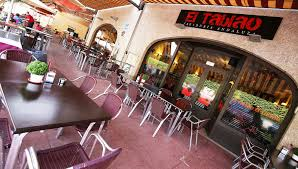
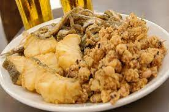
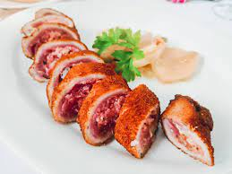
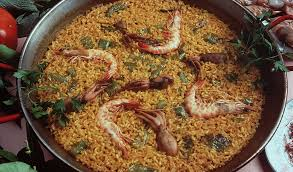
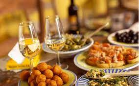
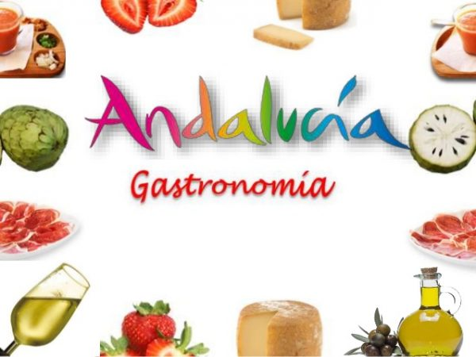

Comer bien en Andalucía es fácil.
Los excelentes productos autóctonos que proporciona su geografía diversa
y su clima, junto con el legado histórico dejado por los pueblos
que habitaron esta tierra,
han puesto sobre el mantel una gastronomía rica y variada sin parangón
La cocina tradicional andaluza tiene rango de arte culinario autóctono
Y sus platos, heredados de generación en generación, son muy apreciados entre los paladares más exigentes
En Tablao ZUJAR damos lo mejor de nosotros para hacer realidad todas las distinciones
que propone la cocina de Andalucia
- Gazpacho Andaluz
- Tosta de Mojama
- Calamares Andaluza
- Chuleton de Buey
- Paella Marinera>





